| Name | Clinotrend Health and Aviation: Dr A.O.Ndhlovu Designated Aviation Medical Examiner |
|---|---|
| Category | Medical Center |
| Address | Grand Central Airport, Main Terminal Building, 3 New Rd, Glen Austin AH, Midrand, 1685 |
| Hours | Mon to Fri 8 am to 5 pm, Sat and Sun closed |
| Phones | Only 011 568 7979 is shown. The 078 205 1405 typo is not public; it may still be saved as an additional number (check Edit profile > Contact) |
| Website | clinotrend-health.co.za |
| Description | None |
| Services and products | None |
| Photos | 3: Street View of the car park, the clinic front with Clinotrend Health / Aviation signage (by owner), an old services flyer (by owner) |
| Attributes | Wheelchair accessible car park, entrance and toilet; Toilet; Appointments recommended; Credit cards, Debit cards, NFC mobile payments |
| Posts | None |
| Reviews | 0, no rating (Google prompt: Get your first review) |
| Pin | -25.98926, 28.140795 |
Overview
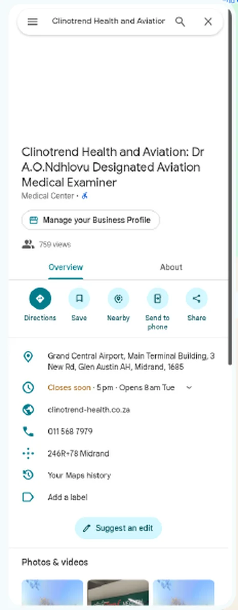
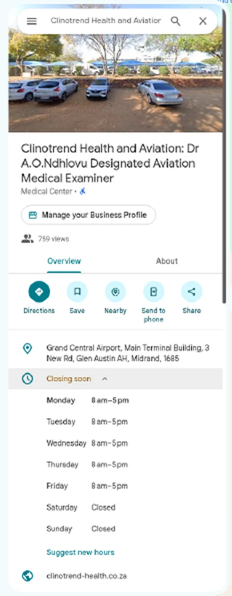
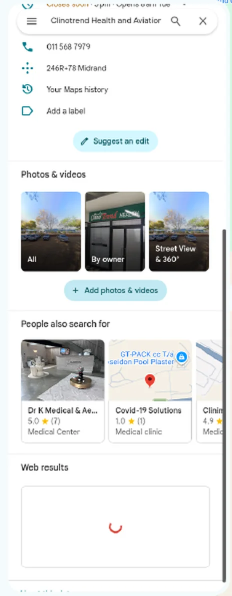
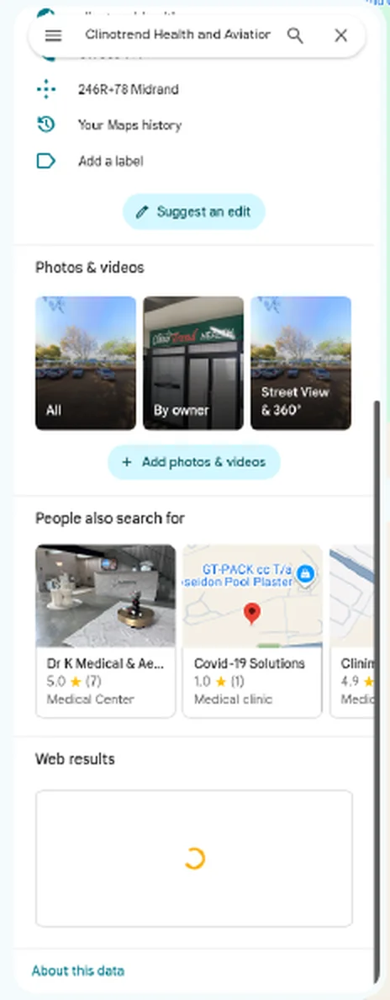
About
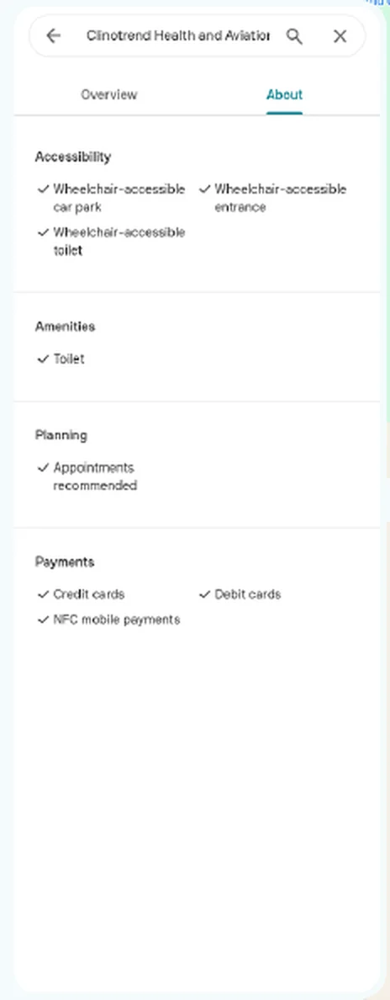
Keep: wheelchair accessible car park, entrance and toilet, Toilet, Credit cards, Debit cards, NFC. Change "Appointments recommended" to "Appointment required" (by appointment only, no walk ins).
Photos (3)
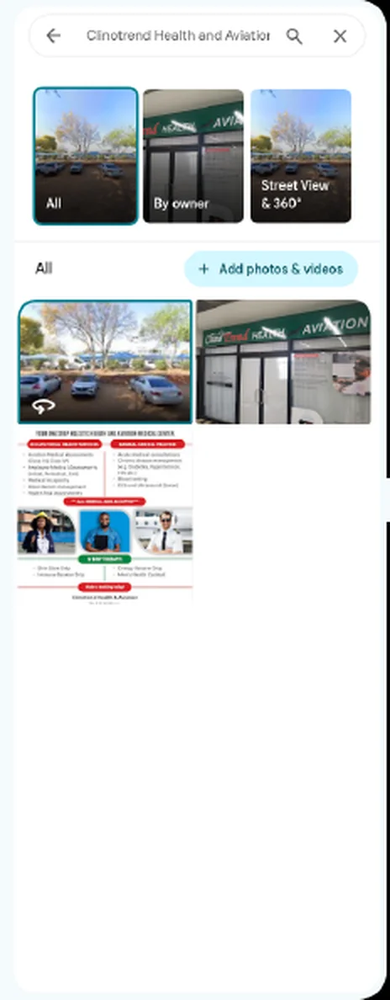
Street View of the car park is Google's own and stays. Clinic front with the Clinotrend Health / Aviation signage is a real practice photo by the owner: keep it.
Old flyer (zoomed, low resolution, so small text is approximate)
Visible: "Your one stop holistic health and aviation medical center"; occupational list (aviation medical assessments Class II and IV, employee medicals initial, periodical and exit, medical incapacity, absenteeism management, health risk assessments); GP list (acute consultations, chronic disease management, blood testing, ECG and ultrasound basic); a red banner "All medical aids accepted"; a green "IV drip therapy" block (Slim Down, Immune Booster, Energy Booster drips, Men's Health Cocktail); stock model photos; "Make booking today". Recommend removing it: IV drips are not shown on the website (hidden at the clinic's request), "All medical aids accepted" and "one stop holistic" are claims HPCSA rules do not allow, ultrasound is not confirmed, and the people are stock models, not the practice. The new services image replaces it.
Phone: only 011 568 7979 shows publicly. The 078 205 1405 typo came from third party place data and may still be saved as an additional number: check Edit profile > Contact.
| Name | ClinoTrend Health & Aviation (real world name; keywords in the name risk a suspension) |
|---|---|
| Category | Medical clinic, plus Occupational medical physician, General practitioner, Doctor |
| Address | Grand Central Airport, 3 New Road, Main Terminal Building, Gate 2, Office TG6B, Midrand, 1685 |
| Hours | Mon to Thu 08:00 to 16:30, Fri 08:00 to 14:30, Sat and Sun closed |
| Phones | 011 568 7979, WhatsApp 078 255 1405 |
| Website | clinotrend-health.co.za (new site) |
| Description | 734 character factual description with directions |
| Services and products | 11 services incl. Class II, Class IV, cabin crew, on-site tests, occupational, visa, travel clinic, GP |
| Photos | Keep the clinic front photo. Remove the flyer. Add logo, cover, services image, desk photo, main gate, main entrance |
| Attributes | Keep accessibility, toilet and payments. Change Appointments recommended to Appointment required. Add Onsite services, Online appointments |
| Posts | 2 a week, first 4 weeks written |
| Reviews | Review requests after each visit |
| Pin | One pin used everywhere (to confirm on site) |
Overview

Services

Photos

About and details

Verdict: the new site is better than the live one, with a few things to check
On content, SEO, speed, accessibility and compliance the new build is clearly ahead. Bookings, the contact form and the staff area use the same backend as live, unchanged. A few things work differently and must be checked right after upload. Nothing a patient can do on the live site is missing, apart from the small items listed under "Differences".
Better
- Pages: 8 public pages (home, aviation, occupational and visa, GP, FAQ, contact, privacy, terms) vs 1 page. Each is real HTML Google and AI assistants can read; the live page is an empty shell until JavaScript runs.
- SEO: 8 URLs in the sitemap (live: 1), page titles and descriptions per page, FAQ and clinic schema, llms.txt, a real 404 (live returns the home page for any URL), JPG share image (live: SVG most apps cannot show), fake Google place ID removed. Search Console verification tag kept.
- Speed (Lighthouse, same local server for both): mobile performance 73 vs 62, desktop 99 vs 88, page weight about 0.7 MB vs 6.4 MB (live loads a 5.5 MB cockpit photo). Main JavaScript 90 KB vs 157 KB compressed.
- Accessibility: Lighthouse 100 vs 93 (mobile) and 100 vs 95 (desktop). Best practices 100 vs 96.
- Analytics: GA4 (G-VX7D0YXXM0) with booking, call and booking-button events. Live sends to "AW-CLINOTREND", a placeholder that is not a real account, so the live site records nothing.
- Accuracy and HPCSA: class scope follows SACAA, no guarantees or superiority claims, one set of confirmed hours, only 011 568 7979 and WhatsApp 078 255 1405, privacy notice and booking terms are real pages (live footer links did nothing).
- Content added: visa medicals, group bookings, appointment only, directions with own photos, what to bring checklist, validity by age, 16 visible FAQ answers across the FAQ, aviation and occupational pages.
- Photos: the doctor's approved photos and the practice's own location photos instead of AI and stock images.
Same as live
- Online booking: same form fields and the same request to /api/create-booking on clinotrend.vercel.app (Neon database), checked line by line against the live JavaScript. Availability, View booking (check and change a booking) and confirmation emails use the same functions.
- Contact form: same /api/send-email function.
- Staff sign in and admin dashboard: /admin/ with bookings, availability, patients, reports, users, using the same API.
- Services: aviation Class II and IV, occupational health, GP, all with the same scope (wording made accurate).
- Testimonials: none on either site.
- IV drip lounge: not shown on live (hidden earlier at the clinic's request) and not on the new site.
Differences to know (removed on purpose)
- "Same-day appointments", "Fast-track", "Rapid turnaround", "Results in 24-48 hours", "Free secure parking", "All medical aids accepted", "Why Choose Us": removed for HPCSA rules.
- ATC under Class IV, "Commercial Balloon Aviators", "SACAA-Approved": corrected to SACAA's wording.
- 082 969 8503 removed (Dr Ndhlovu: only 011 568 7979 and 078 255 1405 are public). Saturday by appointment removed (closed on weekends).
- Keywords meta tag and the AW-CLINOTREND placeholder removed (neither did anything).
- "Request a Call" button not carried over (the contact form and call buttons cover it).
- Old one-page links such as /#aviation and /#contact now open the matching new page (fixed today).
- Payment methods: now on the new site with the live wording (aviation page, FAQ, contact). Same day line added: "Most aviation medicals are completed on the same day, depending on your case."
Still open before or right after upload
- WhatsApp: new site uses the tochat.be bubble only. Check it opens a chat with 078 255 1405 (set in the tochat.be dashboard).
- Staff area: the admin code comes from the developer handover. The live site was rebuilt on 5 Sep, after the handover, and its admin files could not be fetched, so admin changes made after the handover (if any) cannot be confirmed. Sign in to /admin/ straight after upload and check bookings show.
- Test booking: make one test booking after upload and cancel it in /admin/.
- Server files: the live server could not be reached from our side, so its real file list and .htaccess are unknown. Back up public_html first (checklist).
How "live" was captured: our server cannot reach clinotrend-health.co.za (connection fails), so the live side is the live site's own files (index.html, JavaScript and CSS fetched through public validators on 22 Oct 2026, last deployed 5 Sep 2026) run locally, with images from the developer handover whose sizes match the live files. It shows the live design and text as deployed; anything changed on the server after 22 Oct would not show. Lighthouse ran on both builds on the same local server, without compression, so absolute numbers differ from the real host; the comparison is like for like.
Baseline, 26 Oct 2026
Check again on: about 26 Feb 2027. Live (before) on the left, new on the right, and an empty After column to fill in at the check. Raw numbers and method: baseline-2026-10-26.json and .md in the project folder.
Website
| Metric | Live now (before) | New (at upload) | After (Feb 2027) |
|---|---|---|---|
| Lighthouse mobile: Performance | 62 | 73 | |
| Lighthouse mobile: Accessibility | 93 | 100 | |
| Lighthouse mobile: Best practices | 96 | 100 | |
| Lighthouse mobile: SEO | 100 | 100 | |
| Lighthouse mobile: LCP, seconds (lab) | 7.2 | 5.0 | |
| Lighthouse mobile: CLS (lab) | 0 | 0 | |
| Lighthouse mobile: Page weight, KB | 6385 | 705 | |
| Lighthouse desktop: Performance | 88 | 99 | |
| Lighthouse desktop: Accessibility | 95 | 100 | |
| Lighthouse desktop: Best practices | 96 | 100 | |
| Lighthouse desktop: SEO | 100 | 100 | |
| Lighthouse desktop: LCP, seconds (lab) | 2.1 | 0.9 | |
| Lighthouse desktop: CLS (lab) | 0.0 | 0.0 | |
| Lighthouse desktop: Page weight, KB | 7428 | 720 | |
| Public pages | 1 | 8 | |
| Indexable pages | 1 | 8 | |
| Sitemap URLs | 1 | 8 | |
| Real 404 for unknown URLs | No (soft 404) | Yes | |
| Crawlable text without JavaScript | No (about 50 words: title and a noscript line) | Yes (263 to 1,121 words per page) | |
| Structured data types | AdministrativeArea, Answer, BreadcrumbList, City, EntryPoint, FAQPage, GeoCoordinates, ItemList, ListItem, MedicalClinic, MedicalProcedure, OpeningHoursSpecification, Physician, PostalAddress, Question, Reservation, ReserveAction, SiteNavigationElement, WebSite | AdministrativeArea, Answer, BreadcrumbList, City, ContactPage, ContactPoint, EducationalOccupationalCredential, EntryPoint, FAQPage, GeoCoordinates, GovernmentOrganization, ListItem, MedicalClinic, MedicalProcedure, MedicalTest, OpeningHoursSpecification, Physician, PostalAddress, Question, Reservation, ReserveAction, WebPage, WebSite | |
| Main JavaScript, gzip | 153 KB | 88 KB | |
| Analytics | gtag AW-CLINOTREND (placeholder, not a real account): no data, tracking not working before | GA4 G-VX7D0YXXM0 (live host only) with booking_completed, phone_click, book_click events | |
| GA4 data | No data, tracking not working before | starts after upload | |
| Search Console data | verification tag present; no data access for ACC (not shared) | same verification tag kept |
Lighthouse 12.8.2, headless Chrome, home page, default mobile preset (simulated slow 4G, mid range phone) and the desktop preset. Both builds were served by the same local server without compression (our server cannot reach the live host), so absolute numbers will differ on the real host; the comparison is like for like. Mobile performance varies about 2 to 3 points between runs. In Feb 2027 run the same tests on https://clinotrend-health.co.za/ and also PageSpeed Insights for real user data, and read Search Console and GA4 for Nov 2026 to Feb 2027.
Google Business Profile: listing
| Field | Before (26 Oct 2026) | After (Feb 2027) |
|---|---|---|
| Name | Clinotrend Health and Aviation: Dr A.O.Ndhlovu Designated Aviation Medical Examiner | |
| Category | Medical Center | |
| Address | Grand Central Airport, Main Terminal Building, 3 New Rd, Glen Austin AH, Midrand, 1685 | |
| Hours | Mon to Fri 8 am to 5 pm, Sat and Sun closed | |
| Phones shown | 011 568 7979 | |
| Website | clinotrend-health.co.za | |
| Reviews | 0 | |
| Rating | none | |
| Description | none | |
| Services | 0 | |
| Products | 0 | |
| Posts | 0 | |
| Photos | 3 | |
| Attributes | Wheelchair accessible car park, Wheelchair accessible entrance, Wheelchair accessible toilet, Toilet, Appointments recommended, Credit cards, Debit cards, NFC mobile payments | |
| Google prompts | Complete info (profile strength), Add social profiles, Add directions to the website, Set up Google Analytics, Set up booking, Get your first review |
Google Business Profile: performance, May to Oct 2026
Google's longest range (month picker only). October is partial, up to 26 Oct. One reload briefly showed 343 interactions; 352 is the consistent figure.
| Metric | Total | May | Jun | Jul | Aug | Sep | Oct | Monthly average | After: Nov 2026 to Feb 2027, monthly average |
|---|---|---|---|---|---|---|---|---|---|
| Interactions | 352 | 38 | 53 | 100 | 56 | 68 | 37 | 58.7 | |
| Calls | 49 | 3 | 9 | 23 | 11 | 3 | 0 | 8.2 | |
| Direction requests | 288 | 35 | 44 | 67 | 43 | 62 | 37 | 48.0 | |
| Website clicks | 15 | 0 | 0 | 10 | 2 | 3 | 0 | 2.5 | |
| Profile views | 759 | Search mobile 340 (45%), Maps mobile 157 (21%), Search desktop 156 (21%), Maps desktop 106 (14%) | 126.5 | ||||||
| Searches that showed the profile | under 50 | 9 terms, each under 15: aviation doctor grand central; aviation doctor midrand; aviation doctor near me; aviation dr; aviation medical johannesburg; clinotrend; full business name string; steyn city; vian standar the good doctor | |||||||
| Bookings | 0 | Booking through Google is not set up | |||||||
| Messages | not available | ||||||||
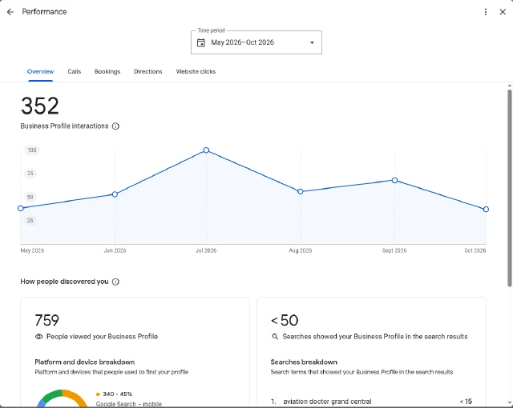
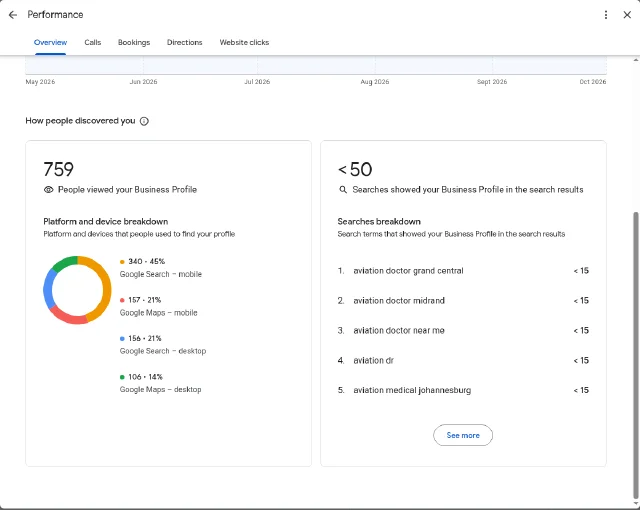
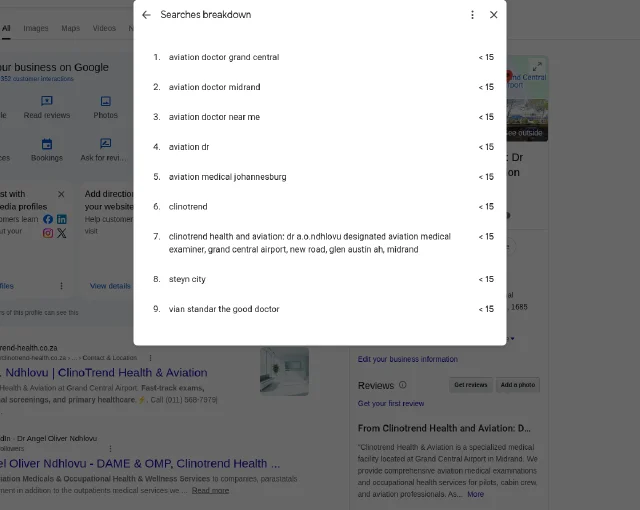
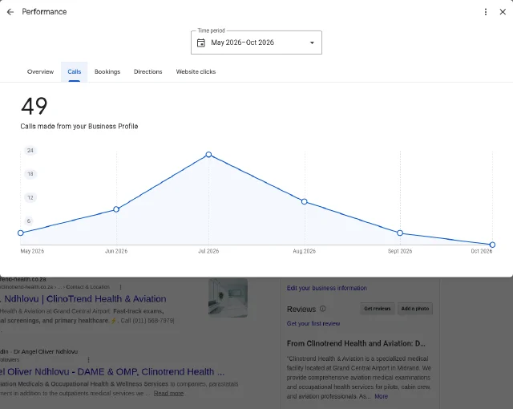
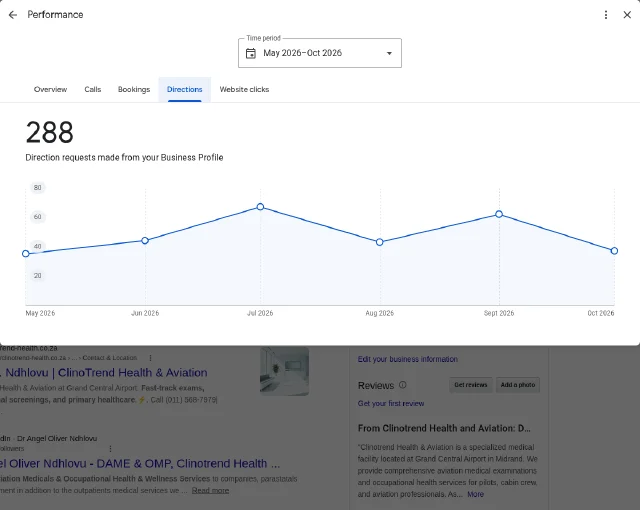
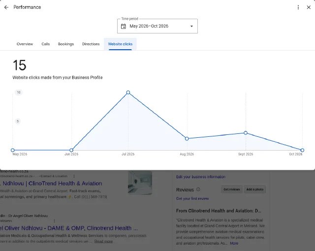
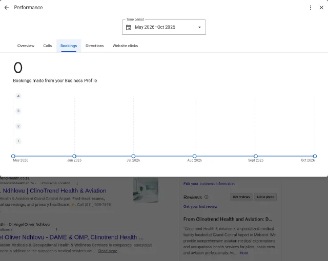
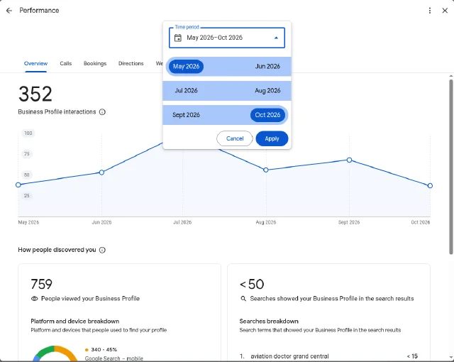
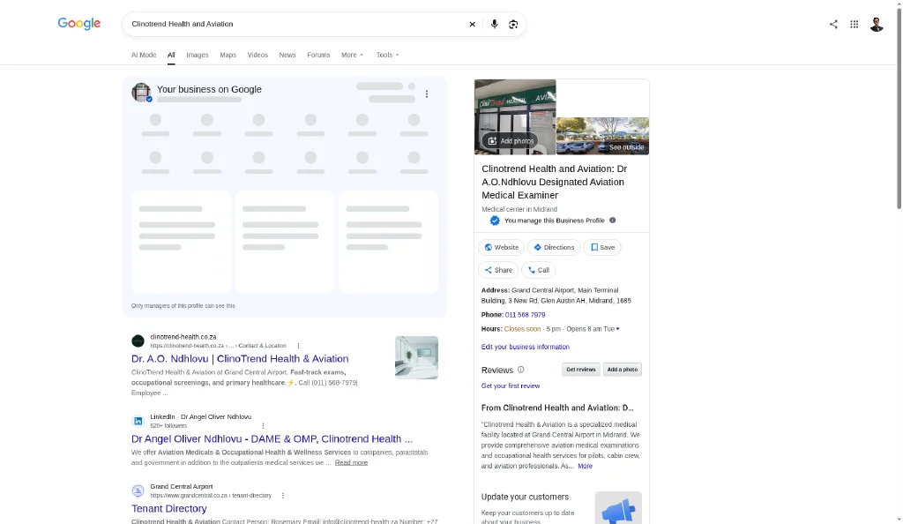
Method
- lighthouse: Lighthouse 12.8.2 CLI, headless Chrome, default mobile preset (simulated throttling, Moto G Power) and --preset=desktop, home page only, both builds served by python3 -m http.server on localhost (no compression, no CDN). Run-to-run variance seen: about 2 to 3 points on mobile performance. Feb 2027: run Lighthouse (same version if possible) against https://clinotrend-health.co.za/ and also PageSpeed Insights for field data.
- pages: Count of public HTML pages a visitor or crawler can open (live: one page with hash sections; new: prerendered routes in dist).
- sitemap: <url> entries in sitemap.xml (live: audit/src_sitemap.xml and the live file fetched 22 Oct).
- structured data: Unique JSON-LD @type values (live: audit/home_raw.html; new: all dist HTML).
- crawlable text: Words in the raw HTML without running JavaScript (live: title plus noscript text; new: prerender word count per page).
- analytics: Tags in the HTML and bundle.
- Google profile: Box browser, Google search panel > Performance, read only, captured 26 Oct 2026. Time period May 2026 to Oct 2026 (longest range Google offers; month picker only, no 28 day view; Oct partial to 26 Oct). Listing facts from Google Maps on the same day. Feb 2027: same panel, range Nov 2026 to Feb 2027, compare monthly averages.